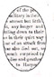

Col. Housum returns; regiment in
Alabama, Valley Spirit, July 16, 1862
"Letter from the Army" Valley
Spirit, August 13, 1862
"Fill up the Old Regiments,"
Valley Spirit, Sept. 3, 1862

"We can have a Chat with the Rebels
whenever we feel like it."
"Either that he would die, get shot or
Resign,
anything atal, only so's he'd get out of this."
Letter from
Pvt. Henry
Erisman, Co. K
Camp near Battle Creek, Tn, August 18, 1862